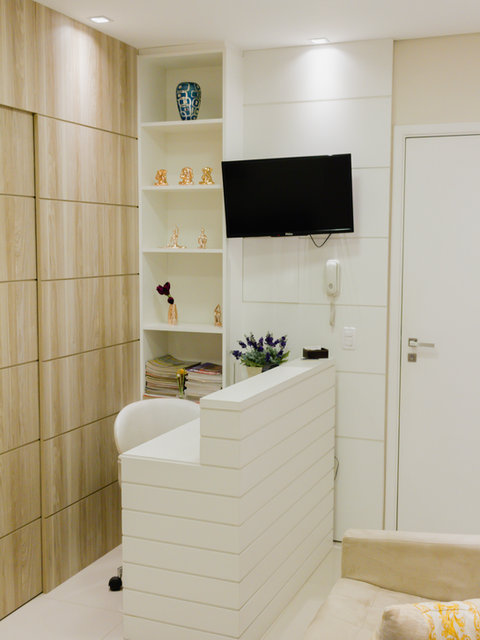
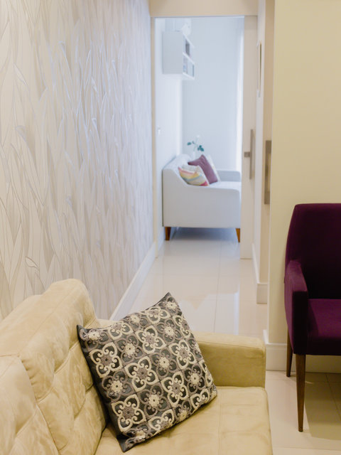
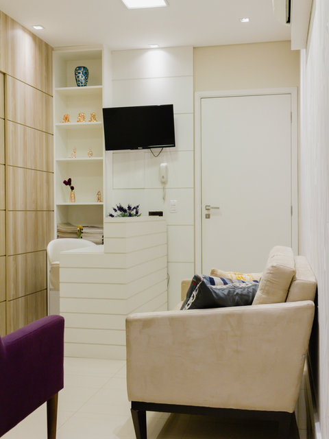

CRP 06/103859
Rosana BorzanPsicóloga clínica e Neuropsicóloga em Granja Viana – Cotia/SP
Psicoterapia baseada em evidências — Terapia do Esquema, DBT e TCC — e avaliação neuropsicológica para adolescentes, adultos e idosos. Atendimento presencial e online.
- Clínica desde 2010
- Coautora de 3 livros
- Pós-graduação UNIFESP e USP
- Presencial e online

+15 anosde atuação clínica
3 livroscomo coautora
9 formaçõese especializações
Onlinepara todo o Brasil
Como posso ajudar
Atendimentos
Cada pessoa chega com uma história única. O trabalho começa por compreender essa história e escolher, com base em evidências científicas, o caminho mais adequado.
01
Psicoterapia individual
Para ansiedade, depressão, padrões que se repetem nos relacionamentos, baixa autoestima e emoções difíceis de lidar. Com Terapia do Esquema, TCC e DBT.
Saiba mais 02Avaliação Neuropsicológica
Investigação detalhada de atenção, memória, linguagem e funções executivas. Auxilia no diagnóstico de TDAH, dislexia e outras condições.
Saiba mais 03Grupo de Habilidades DBT
Treinamento online em grupo para regulação emocional, tolerância ao mal-estar, mindfulness e efetividade interpessoal.
Ver turmas 04Palestras e Workshops
Para empresas, escolas e instituições: saúde mental, bem-estar, desenvolvimento de habilidades e cultura organizacional.
Saiba maisCRP 06/103859Psicóloga desde 2010
Sobre mim
Acolher, transformar e direcionar
Sou psicóloga clínica e neuropsicóloga, apaixonada por gente e pelos mistérios da mente humana. Meu propósito é ajudar cada paciente a identificar a origem de seus sofrimentos e conduzi-lo por um caminho de autoconhecimento e mudança de padrões que já não fazem sentido.
Minha formação inclui pós-graduações pela UNIFESP e pelo HU/USP, especialização em TCC, neuropsicologia e formações em Terapia do Esquema e DBT.
- Terapia do Esquema
- DBT
- TCC
- Neuropsicologia
- Dependência química
Publicações
Coautora dos livros
Técnicas em Transtornos da Personalidade
Mulheres na Psicologia – O poder de uma História
Consultório
Um espaço reservado e acolhedor na Granja Viana
-
Vianna Espaços Modulares
Estrada Basiléia, 91 – sala 315
Granja Viana – Cotia/SP
Ver no mapa - Também online, por videochamada, para pacientes de qualquer cidade do Brasil ou do exterior.



Dúvidas frequentes
Antes de agendar
O atendimento é presencial ou online?
Os dois. O atendimento presencial acontece no consultório na Granja Viana, em Cotia/SP, e o atendimento online é feito por videochamada, para pacientes de qualquer cidade.
Qual é o público atendido?
Adolescentes, adultos e idosos, em psicoterapia individual. A avaliação neuropsicológica e os grupos de DBT têm critérios próprios, que são conversados no primeiro contato.
Quando procurar uma avaliação neuropsicológica?
Quando há queixas de atenção, memória, aprendizagem, organização ou comportamento, suspeita de TDAH ou dislexia, ou quando um médico solicita a avaliação para apoiar o diagnóstico e o planejamento do tratamento. Saiba como funciona.
Qual abordagem é a mais indicada para mim?
Isso é definido em conjunto, a partir das primeiras sessões. A Terapia do Esquema, a TCC e a DBT são abordagens com sólida base científica e podem ser combinadas de acordo com a necessidade de cada pessoa.
Como agendar a primeira consulta?
Pelo WhatsApp (11) 99833-0214, pelo e-mail rosanaborzan.psi@gmail.com ou pelo formulário abaixo.
Contato
Será um prazer te acolher
Envie uma mensagem para tirar dúvidas ou agendar sua consulta. O retorno é feito pessoalmente.
- WhatsApp: (11) 99833-0214
- E-mail: rosanaborzan.psi@gmail.com
- Consultório: Estrada Basiléia, 91 – sala 315, Granja Viana – Cotia/SP